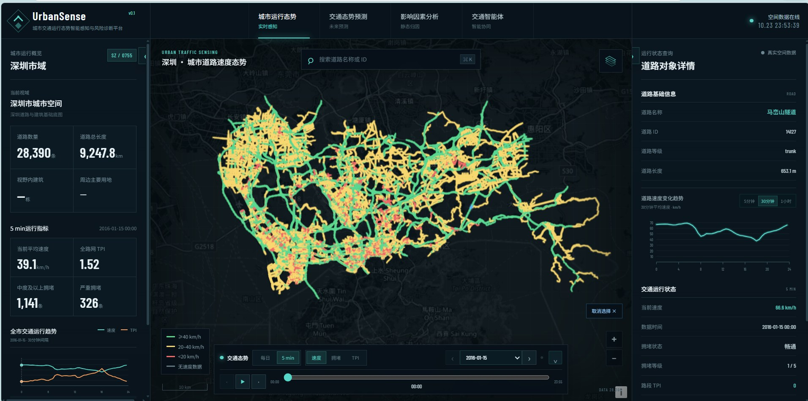
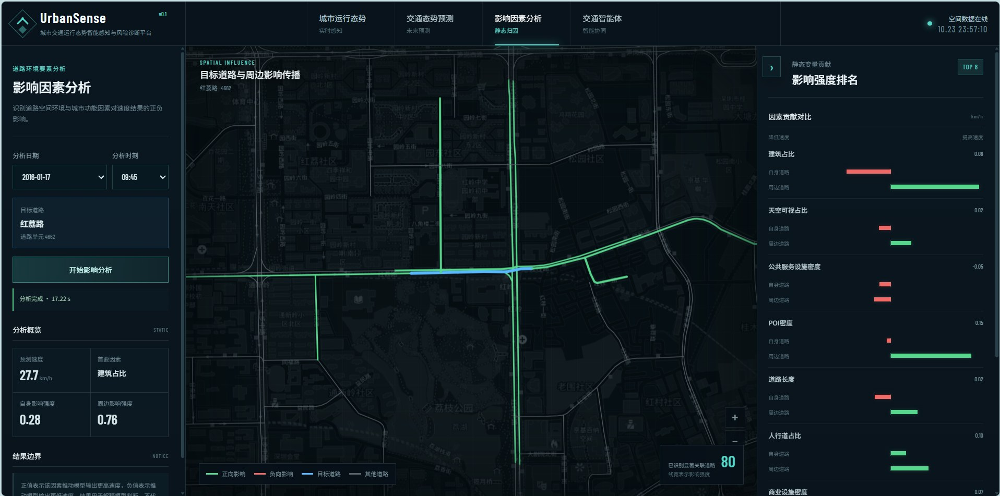
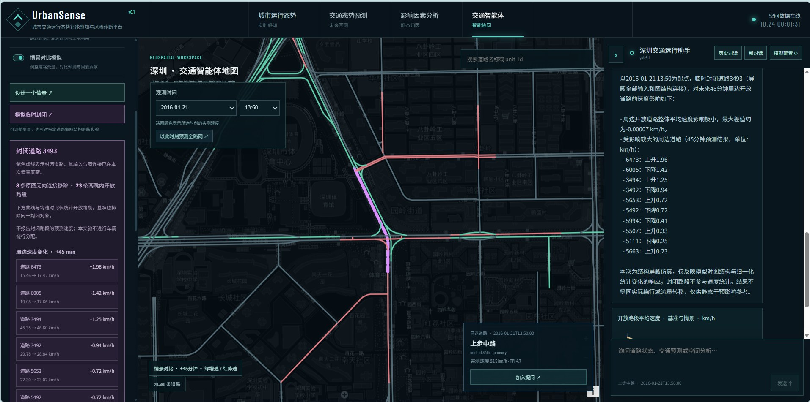

交通态势感知
以道路为统一对象，关联交通时序、路网与城市空间信息。
从一句自然语言，到地图上的分析结果。
连接交通感知、短时预测与因素解释，让复杂研判成为连续、直观的交互。

选择任务、切换道路与预测时域，探索上下文如何连接分析过程。
从全城路网到一条道路，在实际操作中理解平台的工作方式。
下载演示视频 ↓融合动态交通与道路静态环境特征，预测未来 5–45 分钟的速度。通过积分梯度，查看静态因素对模型输出的贡献。
模型归因不等同于现实交通中的因果关系。


围绕选中道路与地图时刻发起分析，复用近期对话中的查询条件。将工具执行状态、文字答复、地图定位与图表结果连在一起。
服务高峰拥堵研判、重点路段排查与方案预评估。
以道路为统一对象，关联交通时序、路网与城市空间信息。
动态 STGCN 与静态 MLP 双分支融合，直接输出多步速度预测。
任务拆解、参数校验与执行记录，将查询、预测和解释串联起来。
模型代码、推理脚本、积分梯度解释与预训练权重。
不包含完整平台及私有数据，运行需提供 README 指定的数据。